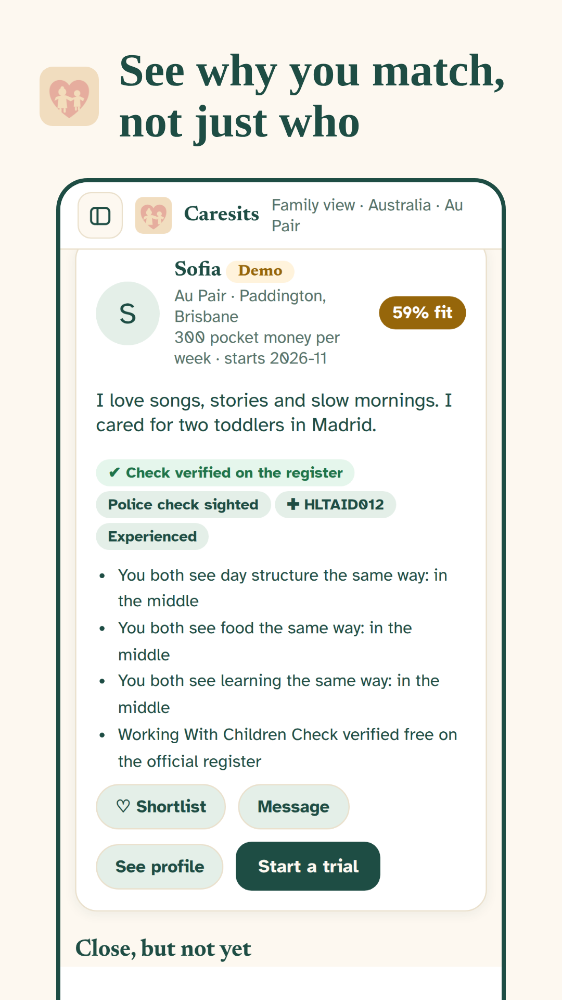
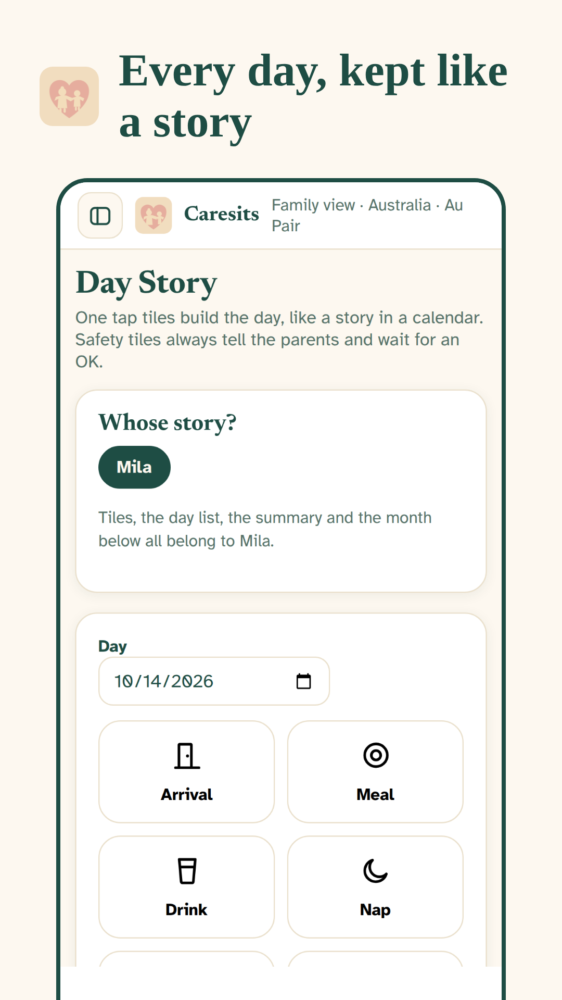
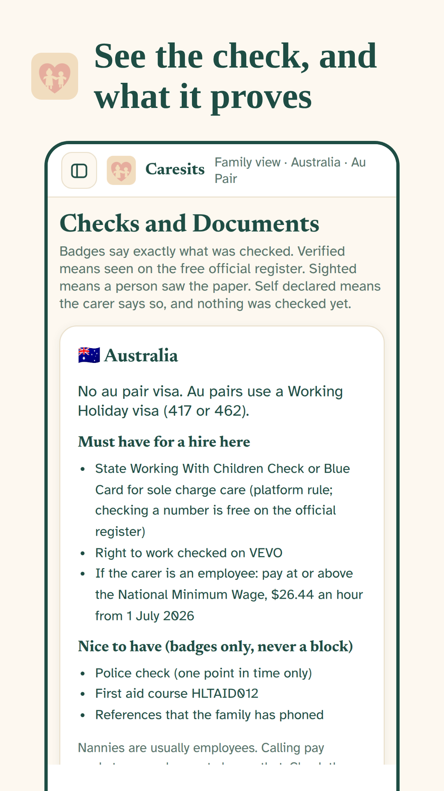

Caresits matches families with nannies, au pairs and babysitters by how a day should run, not just by a photo and a suburb.
Open the app
A short profile tells you almost nothing. You cannot see how a carer runs a day, what their checks really prove, or whether your pay and hours are written down anywhere. Caresits puts all of that in one calm place, for families and for carers.
Both sides answer the same questions about days, food, learning and routines. Every match shows its reasons in plain words.
Checks sit beside the words that prove them. Where a free official register exists, Caresits points you to it. The app never sells a check.
Meals, naps, outings and photo moments land in one gentle timeline, like a story in a calendar that both sides can read.
Pick your country and your role. Families answer as a family. Carers answer as themselves. It takes a few calm minutes.
See who fits and why, look at checks with their proof, shortlist the ones you like, and say hello inside the app.
Rosters, timesheets, emergency details and the Day Story keep the whole week in one place after you hire.
Babysitter, nanny, au pair and demi pair, mothers help, newborn and overnight care, governess, and family day care. Each role gets its own fair questions.
A nanny sees a wage. An au pair sees pocket money and their room. The words never mix, because the law treats them differently.
Checks, visas and pay rules change by country. Caresits carries a pack for each of its twenty one countries, with links to the official pages.
This first version keeps everything on your phone. No account, no tracking, nothing sold. Your background photo, if you pick one, stays on your phone too.


This version of Caresits costs nothing, for families and for carers. No card, no trial clock. If paid plans ever arrive, this page will say so plainly before anything changes.
Yes. This version costs nothing for families and nothing for carers, and it asks for no card. The app earns nothing from checks either, because it never sells one. If a paid plan is ever offered, it will be written here in plain words first, and the free version will keep working for the people already using it.
Families and carers answer the same set of questions about how a day runs: days and hours, food, learning, screens, routines and must haves like checks. Caresits first applies the hard rules, like country, role and free days, then scores what is left. Every match shows its reasons, so you can judge the fit yourself instead of trusting a number.
Caresits shows what each carer has, and the proof beside it. In Australia, working with children checks can be verified free on the official state registers, and the app links you straight there. Where no free register exists, the honest top mark is that a document was sighted. No badge word appears without its proof and its limit beside it.
In this version, yes, in the simplest way possible: it never leaves your phone. There is no account, no server and no tracking, so there is nothing to leak and nothing to sell. You can download your data from Settings at any time, and deleting the app deletes the record with it. The full policy is one tap away below.
No. Carers never pay in Caresits, in this version or in the plan for later ones. Finding work should not cost the person who does the caring. Carers make a profile in their own role, with pay spoken about the right way for that role, and families do the reaching out first.
Caresits carries country packs for twenty one countries across Europe, the Americas, Asia and Oceania, plus Australia at home. Each pack covers the checks that exist there, the visa routes people actually use, and the pay rules that apply, with links to official sources. If your country has no pack yet, the app says so honestly at the start.
The app stays useful. You get a shared roster, timesheets that add hours up for you, reminders for expiring checks, an emergency page both sides can see, and the Day Story: one tap tiles for meals, naps, nappies, outings, health and photo moments, kept like a story in a calendar. Parents can also ask for a photo of their child during the day as that feature opens up.
Open Caresits on your phone, add it to your home screen, and take the first calm step.
Open the app